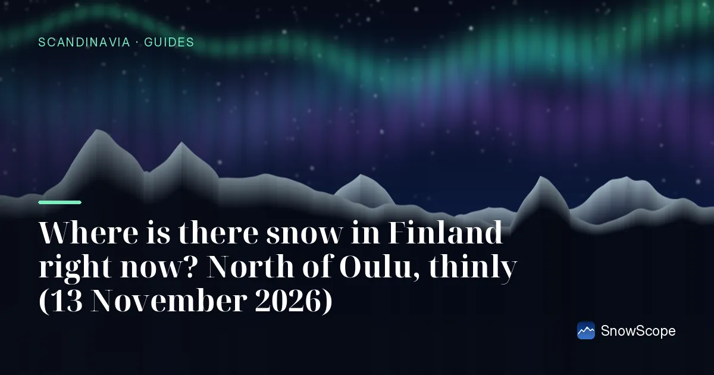
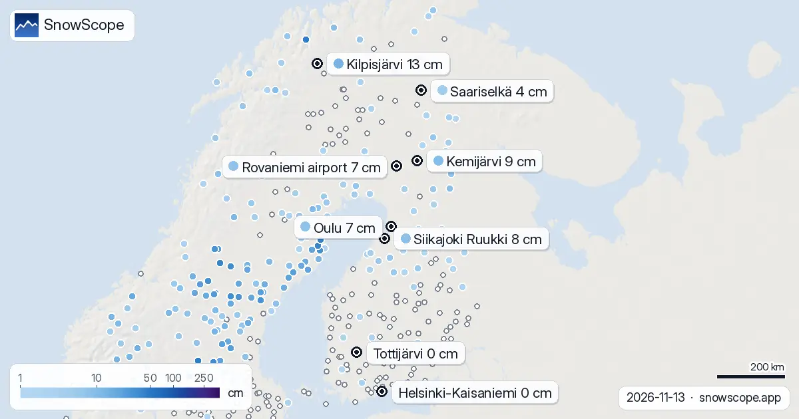

Where is there snow in Finland right now? North of Oulu, thinly (13 November 2026)
On Friday 13 November, Finland's snow divides the country almost neatly in two. North of Oulu, the landscape is white—though nowhere thick. The south remains bare. The boundary is sharp: stations north of the 64th parallel mostly show snow on the ground, while those in the central belt and Helsinki's region show none.
See the live snow forecast for Suomi in the SnowScope appSnow depth, powder alerts and the 3D map, free.
The Rovaniemi region leads, but just barely
Rovaniemi and the north-west have the deepest snow in the country. Rovaniemi Apukka measured 8 cm, Rovaniemi airport 7 cm, and Ylitornio to the west 6 cm. These are the stations skiers and outdoor users would aim for today. All three gained snow overnight: Apukka rose from 6 cm on Thursday to 8 cm on Friday morning.
Enontekiö Kilpisjärvi, the most northern measurement point, holds 13 cm—the country's maximum. This high-fell station in the far north-west is an outlier for now, but it hints at where snow depth will grow as winter settles in. By contrast, the central Arctic fell towns are sparse: Saariselkä has only 4 cm, Lokka 2 cm, and Utsjoki's stations Nuorgam and Kevo 2 cm each.

Oulu and the east coast: fresh overnight
The surprise of Friday morning was the overnight snowfall along the Bothnian Bay coast. Oulu Kaukovainio measured 7 cm, Siikajoki Ruukki 8 cm, and Hailuoto 5 cm. All three had bare ground on Thursday and turned white in one overnight event. This is the kind of rapid change that makes early-season snow cover unreliable: it arrives fast and can melt fast.
Between the 64th and 66th parallels, 23 of 25 stations carried snow. Between the 66th and 68th, 15 of 19 did. Typical depths in this belt are 5 to 9 cm. Kuusamo, another key winter destination, also measured 8 cm on the morning of the 13th.
Above the 68th parallel: thinner than the history books suggest
Lapland's very top should be Finland's snowiest zone, but this year it is not. North of 68 degrees, only 8 of 14 stations measured any snow at all. The region recorded a maximum of 13 cm (Kilpisjärvi), but most stations sat bare or held just a few centimetres. This breaks the winter pattern. Kiruna, across the border in Sweden, normally has snow on 13 November: its 46-year average is 23 cm, with depths typically between 14 and 35 cm by this date. This year's near-absence suggests the cold that feeds the far north arrived late or sat south of the usual zone.
Central Finland and the south: bare and waiting
Between the 60th and 62nd parallels—the band that includes Tampere, Helsinki and southern Karelia—only 6 of 53 stations measured snow, and none more than 2 cm. Helsinki's five weather stations all recorded 0 cm. Tampere's region was equally bare. This is not unusual. Helsinki's historical record shows that the city gets lasting snow around 20 November on average, so the south is running to schedule.
The winter pattern is clear: cold air masses do not reach the south until late in the month. The first lasting snow usually arrives during the last week of November or early December. Skiers in the central regions should expect bare ground for another week or more.
The weekend: a little more for the north, rain for the south
The cold that brought snow to the north will linger but will not add much. Rovaniemi is forecast to gain about 5 cm over Saturday and Sunday, with nights dropping to around -8 to -12 °C. Oulu will see 1 to 2 cm more, with similar cold. This fresh snow will stay on the ground because temperatures will not rise.
The south will take a different path. Helsinki and the central regions will warm and turn wet. Rain is expected by Monday, with temperatures climbing toward 8 °C in Helsinki by Sunday. Any scattered snow in the south will melt or be washed away.
What this means for the week ahead
If you are chasing snow this weekend, the choice is clear: head north of Oulu. Rovaniemi, Kuusamo, Kemijärvi and the Oulu area are white. The far south will stay bare for at least another week, likely two. Early-season snow is thin and can hide hazards: rivers, lakes and bogs are not frozen yet, and open water lies under white cover. Winter tyres are essential for any trip north—Oulu's roads gained fresh snow overnight and conditions will remain cold through the weekend.
Tips for skiers
- For snow this weekend, travel north of Oulu: Rovaniemi (8 cm), Kuusamo (8 cm), Siikajoki (8 cm) and Oulu itself (7 cm) are the best options. The south will stay bare.
- Early snow is thin and unstable. Watch for open water hidden beneath white cover—lakes, rivers and bogs are not yet frozen.
- Winter tyres are compulsory for driving north of Oulu. Fresh overnight snow fell along the Bothnian coast and temperatures will stay near freezing or below.
- Pack layers for the far north: nights will drop to -8 to -12 °C over the weekend, while the south will warm to 8 °C and turn rainy by Monday.
- The south will likely stay bare until late November or early December, when snow usually settles. Plan southern trips for mid-December or later.
About these numbers
Resort snow depths are the deepest snow on the resort's upper slopes on the date shown; they are estimates for an area, not a measurement at one point. Forecasts can change. Always read the official avalanche bulletin before going off-piste.
Cite this report
For research, teaching or the press: the numbers and charts are free to reuse under CC BY 4.0 with this citation.
SnowScope (2026), Where is there snow in Finland right now? North of Oulu, thinly (13 November 2026), https://snowscope.app/blog/en/2026/11/where-is-there-snow-in-finland-13-november-2026.html, accessed 2026-11-13
SnowScope (Atlas Labs). (2026, November 13). Where is there snow in Finland right now? North of Oulu, thinly (13 November 2026). SnowScope snow reports. https://snowscope.app/blog/en/2026/11/where-is-there-snow-in-finland-13-november-2026.html
BibTeX
@misc{snowscope2026whereistheresnowinfinlan,
author = {{SnowScope (Atlas Labs)}},
title = {Where is there snow in Finland right now? North of Oulu, thinly (13 November 2026)},
year = {2026},
month = nov,
howpublished = {\url{https://snowscope.app/blog/en/2026/11/where-is-there-snow-in-finland-13-november-2026.html}},
note = {Published 2026-11-14 13:29 UTC; accessed 2026-11-13}
}· CC BY 4.0 · Methods, data and tools →
Follow Suomi
Free: a message when fresh snow is coming, and the forecast every morning.
More snow reports

Myrkdalen sits behind normal for mid-November, but 44 cm of new snow is forecast at the top in the next week. Data from 13 November.

Lofsdalen has 6–8 cm across the valley as of 13 November 2026, with 7 cm forecast over the next week and no rain threat.

Levi's December snow has strengthened over time. Last 15 winters: 100% of Christmas weeks had 30 cm or more. Typical depth 15 December: 38 cm. Data 13 November 2026.